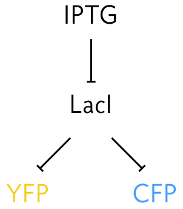
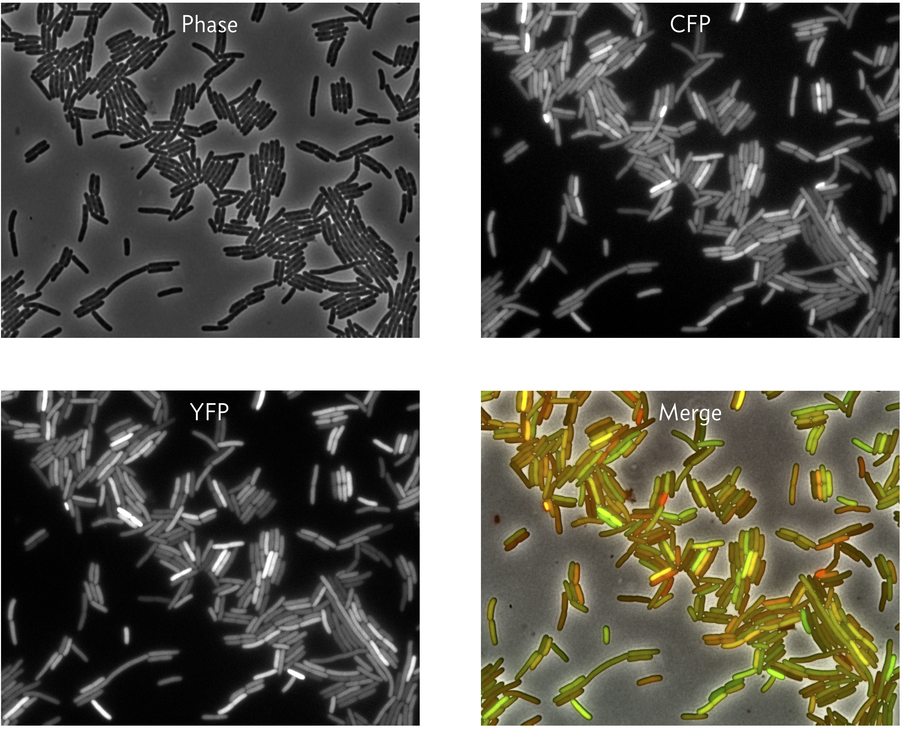

Exercise 6.2: Noise in gene expression
Some of the text of this problem was co-written with Michael Elowitz. The problem itself was inspired by Michael Elowitz and bythis paperbyErik van Nimwegen.
One cell may seem at first glance identical to any other cell living alongside it in the same conditions. However, contents inside of cells may be highly variable due to variations in gene expression. Generally speaking, we call deviations from what we might expect from a deterministic view of gene expression stochasticity, or noise. This is a key concept, because nearly all cellular processes are susceptible to noise, for a host of reasons, including low copy numbers of molecular regulators of gene expression.
To quantitatively define noise, it helps to perform a thought experiment. Say we have many exactly identical cells. In the future, as gene expression, responses to the environment (which we assume is the same for each cell), etc. proceed, the cells will no longer be identical due to stochasticity in all of these processes involving small numbers of molecules. Consider one gene product of interest in these cells. We can define the total noise, \(\eta_\mathrm{tot}\), as the coefficient of variation of the copy numbers of the gene product. The coefficient of variation is the standard deviation of the copy number divided by the mean copy number. If the standard deviation is comparable to the mean, as we would expect in the case of large copy numbers, we have low noise, but if it is large compared to the mean, we have high noise.
Continuing with the thought experiment, we might have fluctuations in environmental conditions that might change the expression level of the gene of interest, either directly, or indirectly through expression of other genes in any given cell. We might also have fluctuations in gene expression due to the inherent stochasticity present in cellular processes, such as in those involved in the Central Dogma. This leads us to categorize the noise according to intrinsic and extrinsic noise.
Intrinsic noise: Transcription and translation can occur at different times and rates in otherwise identical systems. This results in fluctuations in copy numbers. The fluctuations in the copy number of the protein of interest are due to fluctuations that affect only the gene of interest. Operationally, intrinsic noise causes the failure of identical genes in identical environments to correlate. This fundamentally limits the precision of regulation. We use the symbol \(\eta_\mathrm{int}\) for intrinsic noise.
Extrinsic noise: Other molecular species, such as RNA polymerase, ribosomes, chemical species in the cell’s environment, vary over time and affect the gene of interest. The fluctuations in the copy number of the protein of interest are due to fluctuations that affect all genes in a cell. We use the symbol \(\eta_\mathrm{ext}\) for intrinsic noise.
Measurement of noise, both intrinsic and extrinsic, is necessary. It is really hard to know a priori how intrinsically noisy gene expression will be without measuring it. The problem is that just measuring cell-cell variation does not separate intrinsic noise in the process of gene expression from extrinsic cell-cell variation in key cellular components, such as ribosomes, polymerases, etc. Moreover, even if there were no extrinsic noise at all, intrinsic noise can still depend on the relative transcription, translation, and degradation rates, or other factors we are not aware of. Thus, it was critical to actually measure both intrinsic and extrinsic noise and see how both behave.
Delineating intrinsic and extrinsic noise is difficult, if not impossible, by measuring expression of a single gene in a cell. To construct an experiment to study this, we can conduct another thought experiment. Say we put two perfectly molecularly identical cells in the exact same environment and see if they behave similarly. Unfortunately, we cannot do this, because we cannot prepare two perfectly identical cells. However, we can put two (nearly) identical genes in the same cell. This is conceptually related, and allows us to think of these two genes as two independent stochastic samples of the same underlying process. If everything behaved deterministically and was only influenced by extrinsic noise, we would expect strongly correlated variation in both genes. If, however, expression is non-deterministic then variation will be uncorrelated.
To perform this experiment Elowitz and coworkers (Science, 2002) developed a system in which identical promoters were used to express fluorescent proteins of different color, cyan fluorescent protein (CFP) and YFP. The promoters were repressed by the LacI protein. They could tune the repression by changing concentration of IPTG, since IPTG inhibits LacI’s ability to act as a repressor.

They were also careful to integrate the promoters into the genome at loci that were equidistant from the origin of replication so that the copy number of each on the chromosome remains the the same as the genome is replicated. They then could measure the expression level for identical promoters under identical conditions, since the promoters are in the same cell. A typical result in shown in the images below.

We can see that in some cells, both the CFP and YFP levels are high (yellow in the merge), but in other cases, they CFP and YFP levels differ (green or red in the merge).
A data set from this experiment, collected by Michael Elowitz, is available here. Your job in this problem is to do Bayesian modeling to get parameter estimates for the intrinsic and extrinsic noise. This problem has been approached several times, first, of course, in the original Elowitz paper. Swain, Elowitz, and Siggia (PNAS, 2002) put out a paper shortly thereafter studying statistical analysis of noise. More recently, Fu and Pachter (Stat. Appl. Genet. Mol. Biol., 2016) studied this problem. Van Nimwegen (bioRxiv, 2016) took a Bayesian approach, which is what we take here.
Remember, intrinsic noise if the noise inherent in gene expressions levels of the gene of interest in each individual cell and extrinsic noise results from variations from cell to cell. Build a hierarchical model for the Elowitz experiment to get parameter estimates for the intrinsic and extrinsic noise. In your modeling, you can make the following assumptions.
The copy number of a fluorophore is linearly related to the measured fluorescence with zero intercept, which also means there is no background fluorescence.
If CFP and YFP have the same copy number in a cell, their measured fluorescence differs by a constant factor.
All noise is inherent to the genetic machinery of the bacteria and environmental fluctuations; there is no measurement error.
The fluorescent intensity of each cell is independent of all other cells and also identically distributed (i.i.d.).
Although under these assumptions the measured fluorescence should take on discrete values, we nonetheless model the fluorescence values as continuous.